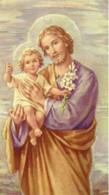

Apresentamos algumas das preciosas e admiráveis virtudes de SÃO JOSÉ, exemplo singular de fidelidade integral e de incomensurável amor a DEUS, que ao longo da sua existência realça a grandeza de um coração que sempre se manifestou, pelo "Silêncio" de seus lábios.
"PRELÚDIO " - (Esclarecendo a necessidade do Dogma).
"TRABALHO E AMOR" - (Introdução, Familiares, Surgiu MARIA, Anúncio da Vinda do SENHOR).
"HOMEM FIEL" - (A Gravidez da Noiva, Casamento com MARIA, Nascimento de JESUS, Visita dos Reis Magos, Fuga para o Egito).
"SANTO ESPECIAL" - (Desaparecimento de JESUS, Caráter de JOSÉ, Morte, Um Santo muito especial).
"ALGUNS DE NOSSOS SITES" - ( Relação e resumo do conteúdo).
"DIVULGAÇÃO" - (Firmas que ajudam a fazer com que SÃO JOSÉ seja mais conhecido).